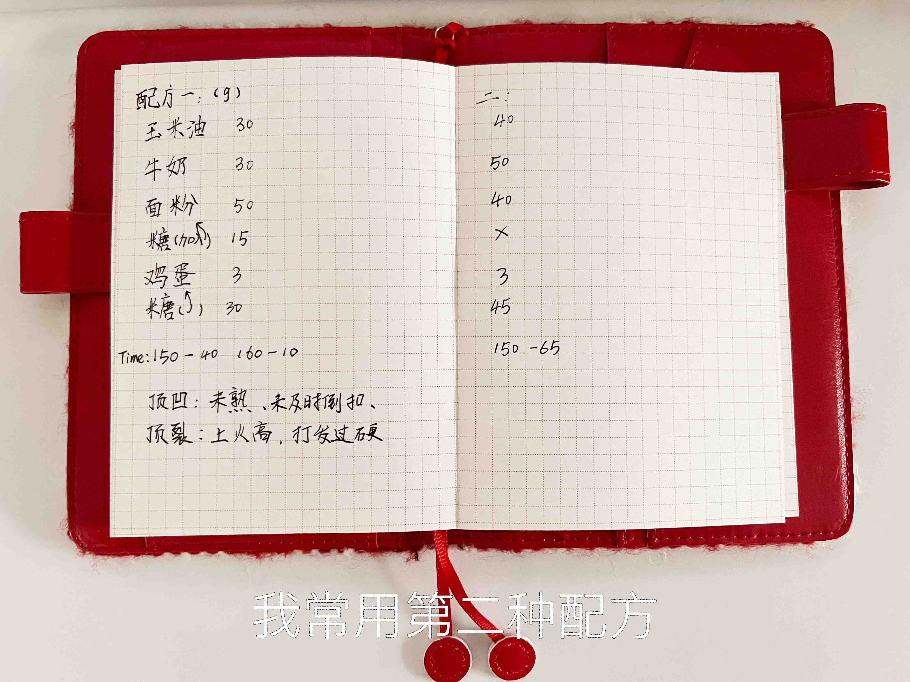
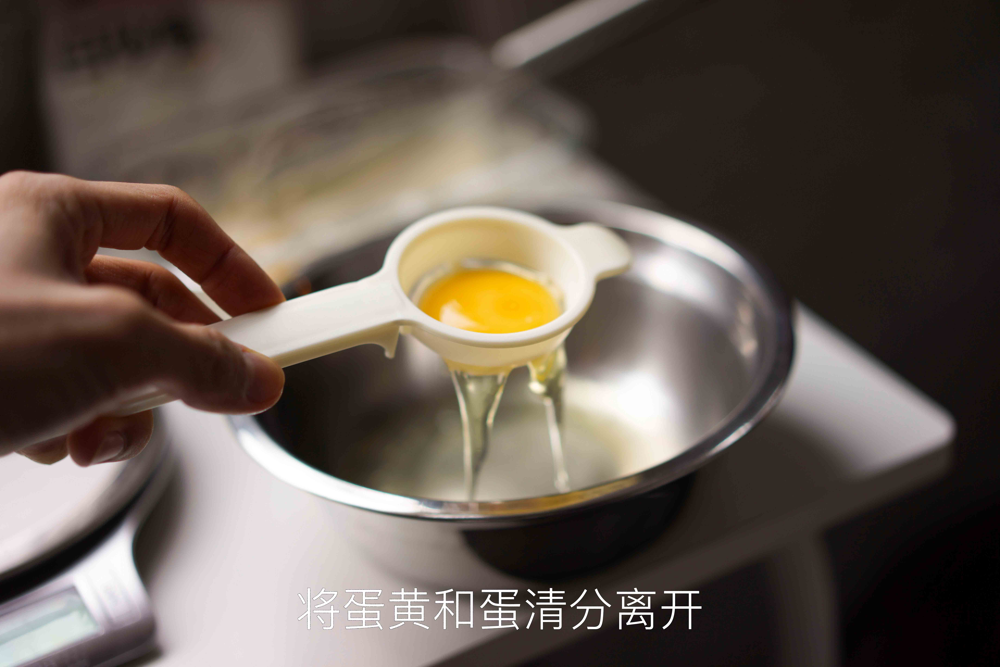
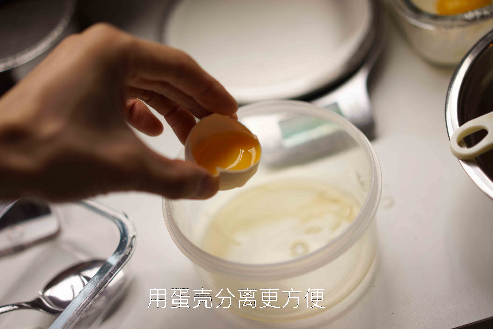
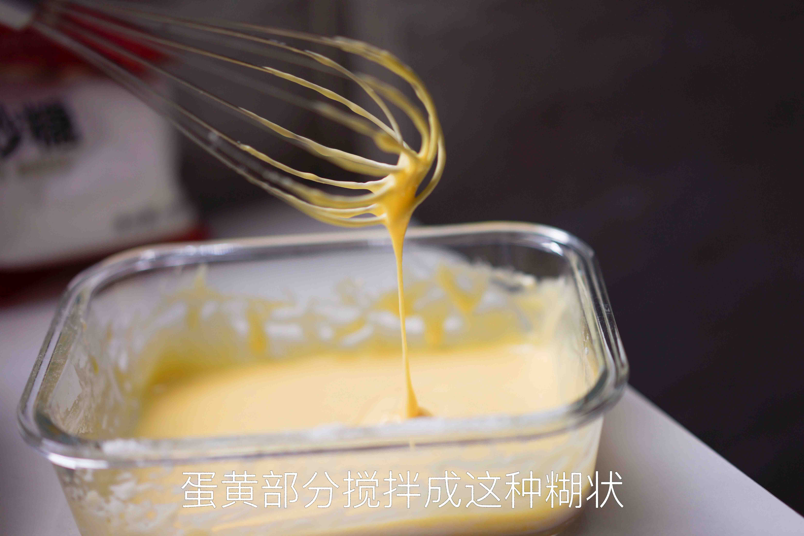
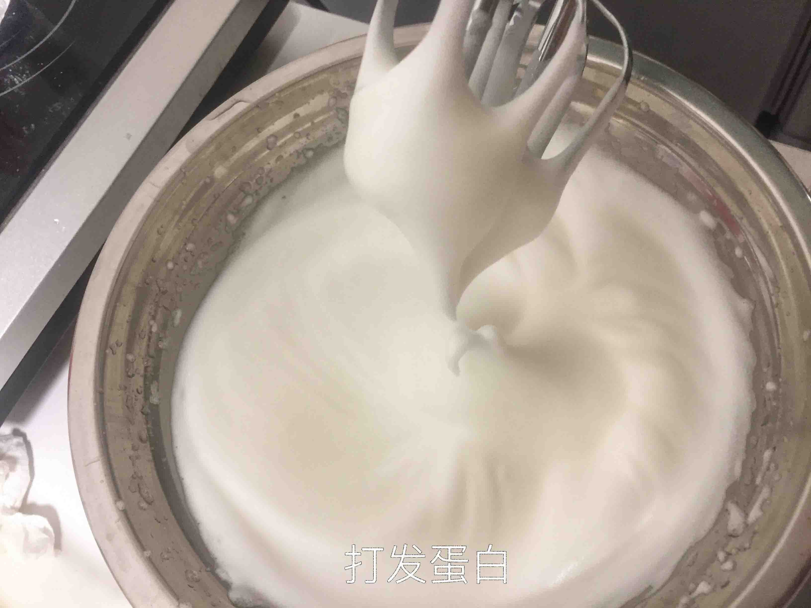
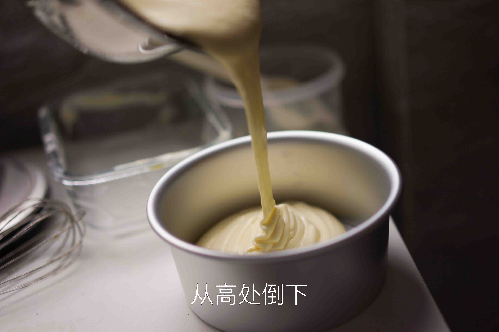
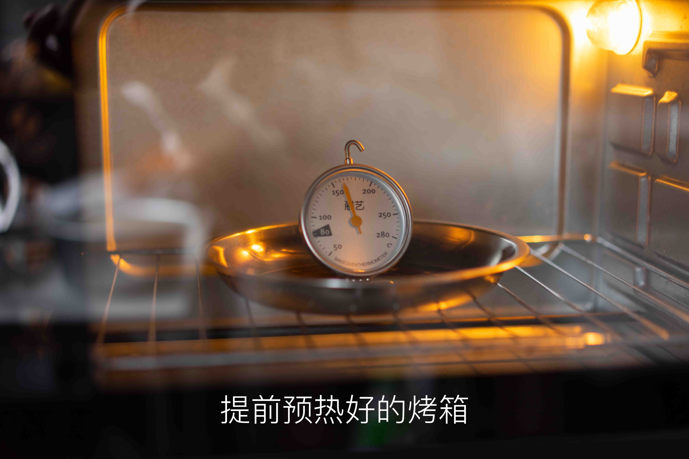
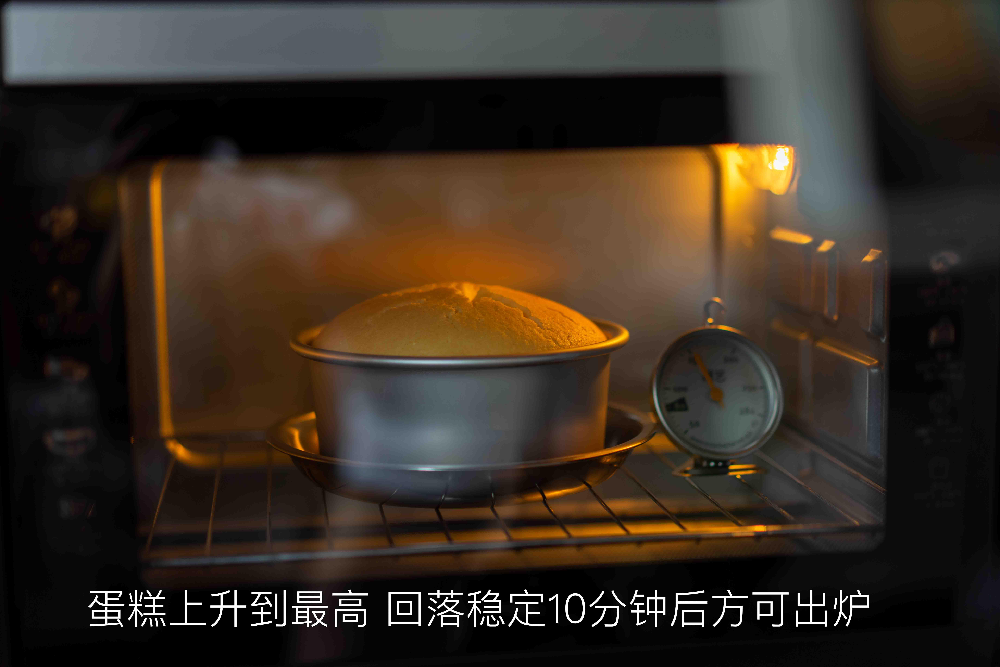
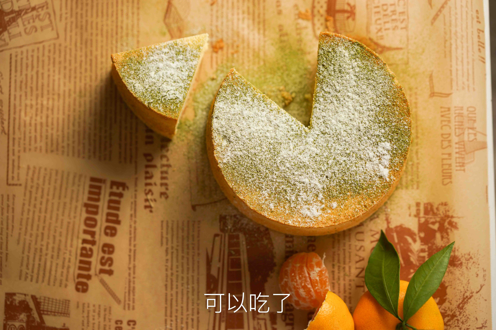

戚风蛋糕的做法
这道烘焙入门甜品口感细腻绵软，拥有云朵般的轻盈质地，属于西点中的经典基础款。主要原料鸡蛋和牛奶提供了优质蛋白与钙质，营养丰富。制作过程对打发、翻拌及烘烤火候要求较高，具有一定挑战，但只要耐心按步骤操作，新手也能成功。从准备到出炉一般需要 1.5 至 2 小时。
预估烹饪难度：★★★★★
预估卡路里：274 大卡
必备原料和工具
工具
- 烤箱（电饭锅可替代，但大多情况下由于锅胆材质问题易失败）
- 打蛋器（电动最好，手动费力且有一定失败概率）或筷子（非常不推荐）
- 铝合金阳极模具（千万不能选不沾模具，常用尺寸为 6 寸或 8 寸）
- 刮刀（用于翻拌蛋糕糊）
原料
- 鸡蛋
- 白糖
- 牛奶（或水）
- 食用油（或黄油，但需加热软化）
- 低筋面粉（推荐惠宜）
- [可选] 柠檬汁或白醋
计算
每份基准为 1 个鸡蛋（正常中等大小，约 50g）。
| 原料 | 1 份 （基准） | 6 寸 （3 份，面积 36） | 8 寸 （5 份，面积 64） |
|---|---|---|---|
| 鸡蛋 | 1 个 | 3 个 | 5 个 |
| 白糖 | 16g | 50g | 80g |
| 食用油 | 8g | 25g | 40g |
| 牛奶 | 10g | 30g | 50g |
| 低筋面粉 | 17g | 50g | 90g |
操作
前期分离操作
- 从冰箱中取出新鲜的鸡蛋
- 准备两个容器并擦干，分别盛放蛋清与蛋黄
- 对盛放蛋清的容器，可稍有水珠，但不能有任何油；盛放蛋黄的容器不能有水珠
- 打蛋，手工或利用分蛋器，将蛋清与蛋黄分离到两个容器中。
- 分离过程中蛋黄不能破碎，蛋清中不能混有任何蛋黄，否则会严重影响打发。（白色系带可进入蛋清，不影响）
- （注意，不使用厨房机的情况下，盛放蛋清的容器也是打蛋的容器，为避免溢出，加入全部蛋清后不要超过容器的 1/8）
搅拌蛋黄液（后蛋法）
- 准备一个新的空碗，加入配方中全部的食用油和全部的牛奶
- 用打蛋器手动快速搅拌，直到油水完全融合，呈现乳白色悬浊液状态（完成乳化）
- 将配方中全部的低筋面粉过筛，加入上述乳化液中。用刮刀以”Z 字形”划拌至没有明显干粉即可（此时面糊可能会有些粗糙，属于正常现象）
- 将分离好的全部蛋黄加入碗中，继续用刮刀”Z 字形”划拌
- 此时面糊会变得非常细腻顺滑，且不易产生面筋。将其静置备用
打发蛋白
- 准备好剩余 3/4 的白糖。分为三份，每份为总量的 1/4
- 蛋清中加入柠檬汁或白醋（可选）
- 打蛋器中速，打发蛋白至有粗大气泡的状态，加入第一份白糖
- 打蛋器高速，打发蛋白至气泡较细腻的状态，加入第二份白糖
- 打蛋器高速，打发蛋白至”湿性发泡”的状态，加入第三份白糖
视觉特征：提起打蛋器头，蛋白霜带出长长且向下弯曲的尖角（俗称大弯勾）。此状态适合做蛋糕卷。
- 打蛋器中低速，打发蛋白至”干性发泡”的状态
视觉特征：提起打蛋器头，蛋白霜呈现短小、直立且坚挺的尖角（俗称小直尖）；倒扣容器，蛋白霜牢牢粘在盆底，完全不会滑落。这是做戚风蛋糕所需的标准状态。
-
此时蛋白打发程度已符合要求
-
关于蛋白状态的判断可参考附件链接中的图片。）
- 打蛋器应尽量贴近容器底部，防止出现上面浮着的表层打发，底部仍然是液体的情况）
混合搅拌
- 简单搅拌几下蛋黄液
- 用刮刀取 1/3 的蛋白霜，加入到蛋黄糊中
-
采用“翻拌”的手法，此手法是为了避免消泡
-
翻拌手法是
- 先用右手拿刮刀从搅拌盆中心插入面糊底部
- 向 8 点钟方向刮去直到碰到盆壁，顺势舀起面糊提到空中，然后再移回盆中心将面糊放入盆内
- 左手握住搅拌盆从 9 点钟方向转到 7 点钟方向，刚好旋转了 60 度，就完成了一次循环
- 速度大约是 1 秒钟两下
-
此方法出自《小岛老师的蛋糕教室》。用接地气的话说就是，像炒菜一样翻炒。
-
将 1/3 的蛋白霜与蛋黄液的混合液倒入剩余 2/3 的蛋白霜中，继续翻拌均匀
- 将蛋糕糊倒入模具，震荡几下避免大气泡
烘烤
- 烘烤总时间：6 寸蛋糕 30-35 分钟，8 寸蛋糕 50 分钟。根据自己烤箱特性灵活调整，一般不超过 $\pm 5$ 分钟。（最后几分钟时可在烤箱前观察）
- 以上管 150 摄氏度，下管 160 摄氏度预热烘烤，约 10 分钟可到达预定温度。
- 预热完成后，将模具放入烤箱下层
-
选择变温烘烤，分为两个阶段。
-
第一阶段烤箱设定温度为：上管 150 摄氏度，下管 160 摄氏度；
- 烘烤总时长的前 3/5 为第一阶段烘烤
- 第二阶段温度为：上管 160 摄氏度，下管 170 摄氏度；
-
烘烤总时长的后 2/5 为第二阶段烘烤。直接调整烤箱温度即可切换。
-
烤好后，出炉
-
此操作可能会烫手，注意用毛巾辅助
空气炸锅特别操作指南（以 6 寸为例）
空气炸锅热风循环极强且离发热管极近，直接使用烤箱温度会导致顶部焦糊而内部夹生。请严格遵守以下降温与遮盖流程：
- 预热：空气炸锅设置 130°C 预热 5 分钟
- 入锅与遮盖：将装有蛋糕糊的模具放入炸锅。立刻在模具上方盖上一层锡纸（亮面朝上，哑光面接触食物），锡纸边缘捏紧，防止被热风吹开
- 第一阶段烘烤：设置 130°C，烘烤 35 分钟
- 第二阶段上色：打开炸锅，撤掉锡纸。将温度调高至 150°C，继续烘烤 10–15 分钟
- 判断熟透：蛋糕顶部膨胀且上色呈金黄色即可出锅。用牙签扎入中心，拔出后没有湿润面糊带出即代表已烤熟
- 出锅后的震热气与倒扣脱模操作，与烤箱版完全一致
冷却与脱模
- （可选） 将模具从高处落下，震出其中的热气
-
模具倒扣 10 分钟，使蛋糕冷却
-
没有冷却的蛋糕立刻脱模会损伤蛋糕
-
此操作可能会烫手，注意用毛巾辅助
-
脱模，食用
附加内容
- 参考了以下教程，文中说明非常详细且有每一步骤的配图。同时，对于为什么做某一个操作、背后的原理也有阐释，以及出现某些问题的分析：
- 为了做好这个戚风蛋糕，用了一整箱鸡蛋，从此告别凹底和塌陷
- 对戚风蛋糕而言，蛋清打发是次要问题，关键是烤制时的温度和时间。
- 蛋清容器而言，可有水珠，蛋黄容器不能有。
- 原因：油会影响蛋白的打发，蛋清 85%是水，稍有水珠并不影响打发。
- 特别新鲜的鸡蛋蛋清会比较硬，应对硬蛋清 5 个鸡蛋配方的话加 15ml 水会帮助蛋清打发（1 个鸡蛋配方则是 3g 水）
- 蛋清打发途中加的糖，实际也是先融于蛋清中的水里，成为糖浆溶液包裹在气泡外，对打发的气泡起保护作用。
- 温度对糖融于水的速率以及溶解度影响较大，刚从冰箱拿出的蛋清不易打发。但温度较低的鸡蛋容易分离蛋清蛋黄，建议分离后恢复室温再进行打发。
- 一些参考图片









如果您遵循本指南的制作流程而发现有问题或可以改进的流程，请提出 Issue 或 Pull request 。